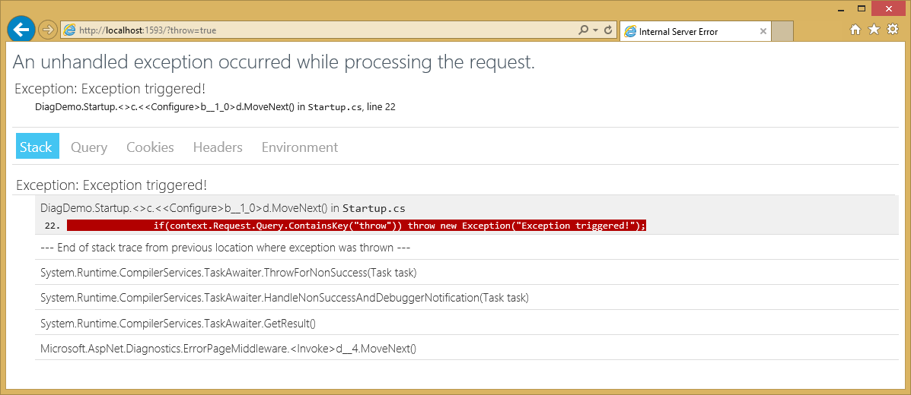
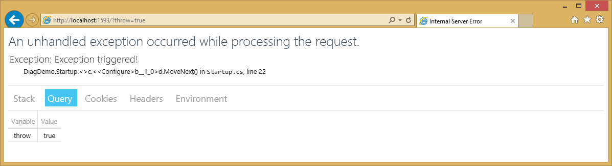

Diagnostics¶
By Steve Smith
ASP.NET 5 includes a number of new features that can assist with diagnosing problems. Configuring different handlers for application errors or to display additional information about the application can easily be achieved in the application’s startup class.
- In this article:
Browse or download samples on GitHub.
Configuring an error handling page¶
In ASP.NET 5, you configure the pipeline for each request in the Startup class’s Configure() method (learn more about Configuration). You can add a simple error page, meant only for use during development, very easily. All that’s required is to add a dependency on Microsoft.AspNet.Diagnostics to the project (and a using statement to Startup.cs), and then add one line to Configure() in Startup.cs:
1 2 3 4 5 6 7 8 9 10 11 12 13 14 15 16 17 18 19 20 21 22 23 24 25 26 27 28 29 30 31 32 33 34 35 36 37 38 39 40 41 42 43 44 45 46 47 | using Microsoft.AspNet.Builder;
using Microsoft.AspNet.Diagnostics;
using Microsoft.AspNet.Hosting;
using Microsoft.AspNet.Http;
using Microsoft.Framework.DependencyInjection;
using System;
namespace DiagDemo
{
public class Startup
{
// For more information on how to configure your application, visit http://go.microsoft.com/fwlink/?LinkID=398940
public void ConfigureServices(IServiceCollection services)
{
}
public void Configure(IApplicationBuilder app, IHostingEnvironment env)
{
if (string.Equals(env.EnvironmentName, "Development", StringComparison.OrdinalIgnoreCase))
{
app.UseErrorPage();
app.UseRuntimeInfoPage(); // default path is /runtimeinfo
}
else
{
// specify production behavior for error handling, for example:
// app.UseErrorHandler("/Home/Error");
// if nothing is set here, web server error page will be displayed
}
app.UseWelcomePage("/welcome");
app.Run(async (context) =>
{
if(context.Request.Query.ContainsKey("throw")) throw new Exception("Exception triggered!");
context.Response.ContentType = "text/html";
await context.Response.WriteAsync("<html><body>Hello World!");
await context.Response.WriteAsync("<ul>");
await context.Response.WriteAsync("<li><a href=\"/welcome\">Welcome Page</a></li>");
await context.Response.WriteAsync("<li><a href=\"/?throw=true\">Throw Exception</a></li>");
await context.Response.WriteAsync("</ul>");
await context.Response.WriteAsync("</body></html>");
});
}
}
}
|
The above code, which is built from the ASP.NET 5 Empty template, includes a simple mechanism for creating an exception on line 36. If a request includes a non-empty querystring parameter for the variable throw (e.g. a path of /?throw=true), an exception will be thrown. Line 21 makes the call to UseErrorPage() to enable the error page middleware.
Notice that the call to UseErrorPage() is wrapped inside an if condition that checks the current EnvironmentName. This is a good practice, since you typically do not want to share detailed diagnostic information about your application publicly once it is in production. This check uses the ASPNET_ENV environment variable. If you are using Visual Studio 2015, you can customize the environment variables used when the application runs in the web application project’s properties, under the Debug tab, as shown here:
Setting the ASPNET_ENV variable to anything other than Development (e.g. Production) will cause the application not to call UseErrorPage(), and thus any exceptions will be handled by the underlying web server package(in this case, Microsoft.AspNet.Server.IIS) as shown here:
We will cover the features provided by the error page in the next section (ensure ASPNET_ENV is reset to Development if you are following along).
Using the error page during development¶
The default error page will display some useful diagnostics information when an unhandled exception occurs within the web processing pipeline. The error page includes several tabs with information about the exception that was triggered and the request that was made. The first tab shows the stack trace:
The next tab shows the contents of the Querystring collection, if any:
In this case, you can see the value of the throw parameter that was passed to this request. This request didn’t have any cookies, but if it did, they would appear on the Cookies tab. You can see the headers that were passed, here:
Note
In the current pre-release build, the Cookies section of ErrorPage is not yet enabled. View ErrorPage Source.
HTTP 500 errors on Azure¶
If your app throws an exception before the Configure method in Startup.cs completes, the error page won’t be configured. For local development using IIS Express, you’ll still get a call stack showing where the exception occurred. The same app deployed to Azure (or another production server) will return an HTTP 500 error with no message details. ASP.NET 5 uses a new configuration model that is not based on web.config, and when you create a new web app with Visual Studio 2015, the project no longer contains a web.config file. (See Understanding ASP.NET 5 Web Apps.)
The publish wizard in Visual Studio 2015 creates a web.config file if you don’t have one. If you have a web.config file in the wwwroot folder, deploy inserts the markup into the the web.config file it generates.
To get detailed error messages on Azure, add the following web.config file to the wwwroot folder.
Note
Security warning: Enabling detailed error message can leak critical information from your app. You should never enable detailed error messages on a production app.
<configuration>
<system.web>
<customErrors mode="Off"/>
</system.web>
</configuration>
The runtime info page¶
In addition to configuring and displaying an error page, you can also add a runtime info page by simply calling an extension method in Startup.cs. The following line, is used to enable this feature:
app.UseRuntimeInfoPage(); // default path is /runtimeinfo
Once this is added to your ASP.NET application, you can browse to the specified path (/runtimeinfo) to see information about the runtime that is being used and the packages that are included in the application, as shown below:
The path for this page can be optionally specified in the call to UseRuntimeInfoPage(). It accepts a RuntimeInfoPageOptions instance as a parameter, which has a Path property. For example, to specify a path of /info you would call UseRuntimeInfoPage() as shown here:
app.UseRuntimeInfoPage("/info");
As with UseErrorPage(), it is a good idea to limit public access to diagnostic information about your application. As such, in our sample we are only implementing UseRuntimeInfoPage() when the EnvironmentName is set to Development.
Note
Remember that the Configure() method in Startup.cs is defining the pipeline that will be used by all requests to your application, which means the order is important. If for example you move the call to UseRuntimeInfoPage() after the call to app.Run() in the examples shown here, it will never be called because app.Run() will handle the request before it reaches the call to UseRuntimeInfoPage.
The welcome page¶
Another extension method you may find useful, especially when you’re first spinning up a new ASP.NET 5 application, is the UseWelcomePage() method. Add it to Configure() like so:
app.UseWelcomePage();
Once included, this will handle all requests (by default) with a cool hello world page that uses embedded images and fonts to display a rich view, as shown here:

You can optionally configure the welcome page to only respond to certain paths. The code shown below will configure the page to only be displayed for the /welcome path (other paths will be ignored, and will fall through to other handlers):
app.UseWelcomePage("/welcome"));
Configured in this manner, the startup.cs shown above will respond to requests as follows:
| Path | Result |
|---|---|
| /runtimeinfo | UseRuntimeInfoPage will handle and display runtime info page |
| /welcome | UseWelcomePage will handle and display welcome page |
paths without ?throw= |
app.Run() will respond with “Hello World!” |
paths with ?throw= |
app.Run() throws an exception; UseErrorPage handles, displays an error page |
Summary¶
In ASP.NET 5, you can easily add error pages, view diagnostic information, or respond to requests with a simple welcome page by adding just one line to your app’s Startup.cs class.
Additional Resources¶
- Using Application Insights - Collect detailed usage and diagnostic data for your application.